Same header. Different context.
Left: browsing your nodes. Right: returning to the same conversation.
In every concept, sync changes feedback—not header geometry. Drafts and the current workspace stay intact.
Command rail
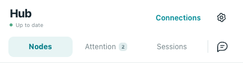
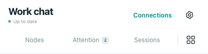
The right-hand action changes from Resume chat to Back to nodes. Tabs never move.
Workspace segments
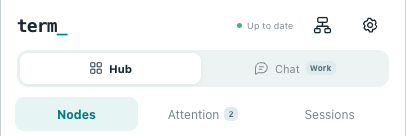
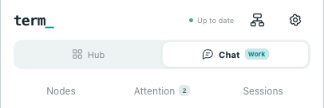
Hub / Chat switches workspace while the content strip keeps its reserved height.
Context switcher
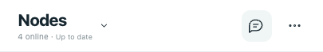
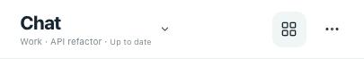
The title follows context. A compact icon returns to the node list.
Breadcrumb bar
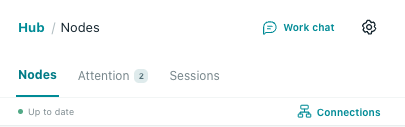
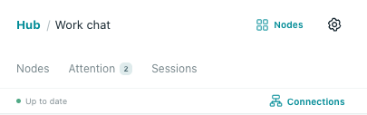
The breadcrumb identifies your location; the named chat action becomes Nodes.
Floating dock
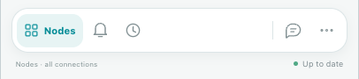
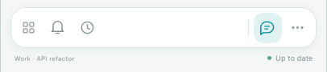
The dock stays pinned. The quiet caption names the current context.
Session rail
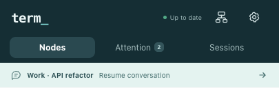
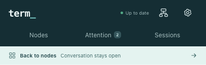
The current-conversation ribbon becomes Back to nodes, without disappearing.